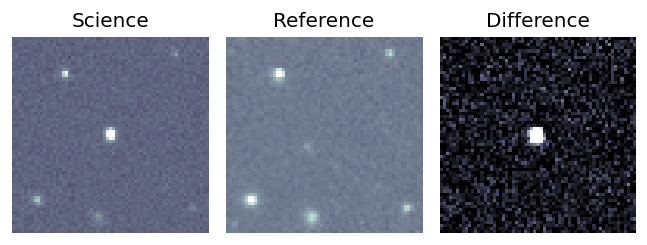
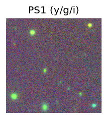
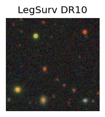
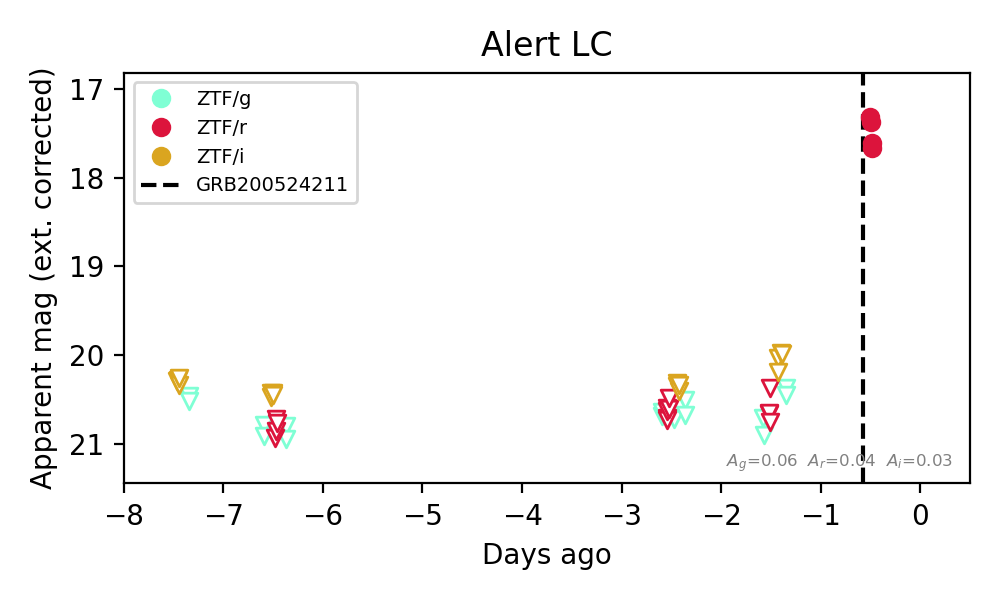
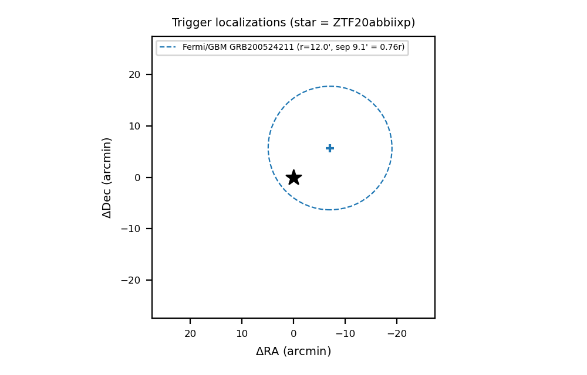

Candidate List 20200524Last night — ZTF: 1 passed basic cuts (1 young) · LSST: 0 passed basic cuts (0 young)Previous Day Next Day
Section 1: New Sources (age<1d) Section 2: Old (1-5d) sources observed last nightplaceholder
Section 1: New Afterglow/FBOT Cands Last Night (1)
1. [ZTF] ZTF20abbiixp (Afterglow?) (TNS: AT 2020kym) [Back to Top] [Share] [Trigger Swift] [Fritz Alert] [Fritz Source] [Lasair]RA, Dec: 213.04306, 60.90528 14h12m10.34s, 60d54m19.01sGalactic (l, b): 106.51931, 53.57477 ext(g-r) = 0.018Coincident trigger: Fermi/GBM GRB200524211 (r=12.0', sep 9.1' = 0.76 r; 0.08 d before first detection)Trigger time(s) marked on the light curve; error circles in the localization panel.


TESS: Sectors [ 15 16 22 23 48 49 75 76 120 121]
SDSS (<15 kpc):Found SDSS phot-z: z=0.64; peak abs mag = -25.65
PS1: 0 sources in 3 arcsec
LegacySurvey: 1 sources in 3 arcsec Closest: d = 6.81 arcsec, 119.4 deg (east of north) photoz=0.58 (68% bounds 0.56, 0.62), type=DEV peak abs mag (ext. corrected) = -25.41 (68% bounds -25.29, -25.57)


Rise Rate:
r: 3.42 mag/day
Fade Rate:
r: 16.48 mag/day